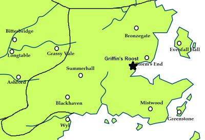

Griffin's Roost
Griffin’s Roost is the seat of House Connington. It is a castle located in the Stormlands.
During Robert’s Rebellion, Lord Jon Connington was raised to the position of Hand of the King to Aerys II. After his failure at the Battle of the Bells, Lord Jon was stripped of his titles and sent into exile. Griffin’s Roost and the lordship that went with it was passed to Jon’s cousin and castellan Ser Ronald Connington. When Robert Baratheon unseated Aerys II and claimed the throne, Ronald was demoted from lordship to be merely the Knight of Griffin’s Roost. Nine-tenths of his lands were then distributed to neighboring Lords who had supported Robert in his rebellion.
Griffin’s Roost is located on a lofty crag jutting out from the shores of Cape Wrath. The castle lies surrounded by red stone cliffs on three sides, which descend into the stormy waters of Shipbreaker Bay. The land-facing approach is a long natural ridge called the griffin’s throat. The entrance to the griffin’s throat is guarded on one end by a gatehouse, and by the castle’s main gate and two round towers on the other end.
Map on Next page.
